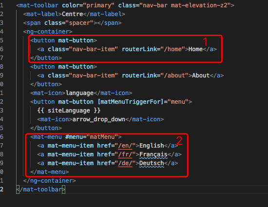
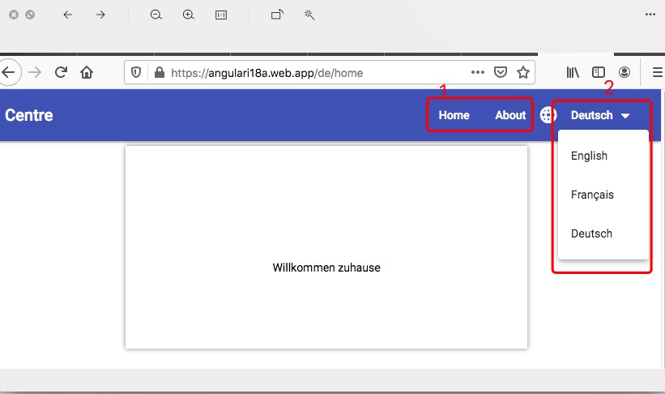
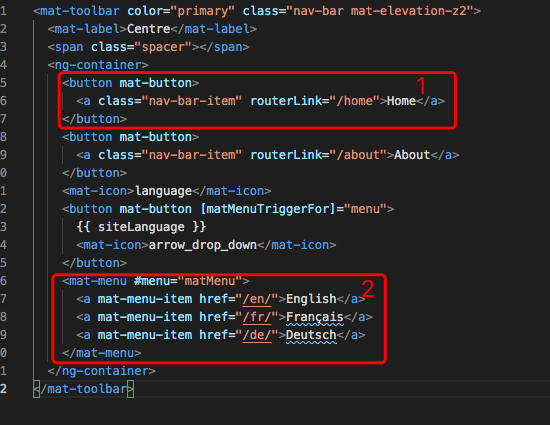
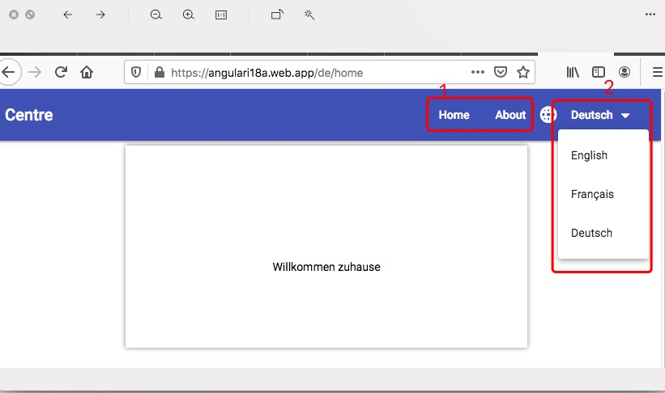

Deploy A Routed Localized Angular to Firebase
For navigation: href ≠ routeLink. Differentiate
the two attributes is necessary when we build a SPA(single page
application). Href will introduce to reload the whole page and
lose all the states of the page, while routeLink will introduce to
navigate to other components in the same page.
Internationalization (i18n) is the process of designing and preparing your app to be usable in different locales around the world. Localization is the process of building versions of your app for different locales, including extracting text for translation into different languages, and formatting data for particular locales.
Internationalization (i18n) is the process of designing and preparing your app to be usable in different locales around the world. Localization is the process of building versions of your app for different locales, including extracting text for translation into different languages, and formatting data for particular locales.
In this blog, I will introduce how to build and deploy a routed localized angular application to firebase step by step. After deployment, users can choose between French, English and German versions.
-
Create a project with routing.
ng new ngi18n --routing
ngi18n is my project name. - Configure app-routing.module.ts as normal.
 Configure navigation bar. For navigating between components, configuration like ①. For changing to different locale, e.g.
from /en/index.html to /fr/index.html, configure like ②.


Configure navigation bar. For navigating between components, configuration like ①. For changing to different locale, e.g.
from /en/index.html to /fr/index.html, configure like ②.


- Add the localize package.
ng add @angular/localize - Mark the static text messages in your component templates for
translation using the i18n attribute, e.g.
<h1 i18n>Welcome</h1 i18n> -
Extract the source language file messages.xls. I changed
the source language file location to translate.
ng extract-i18n --output-path src/translate - Create a translation file for each language by copy and rename
the source file. I created copies for the languages French and
German. Translate each translation file. ( I skip the
details about translation.)

- Define locales in the build configuration. Configure
angular.json.
sourceLocale: The locale you use within the app source code (en-US by default). locales: A map of locale identifiers to translation files Set "localize" to true will cause an error when using
Set "localize" to true will cause an error when using
ng serveif more than one locale is defined. Setting the options to a specific locale, such as "localize": ["fr"]. Specify build configuration for each locale.
Specify build configuration for each locale.
 Apply specific build options for just one locale.
Apply specific build options for just one locale.
ng serve --configuration=fr
orng build --configuration=production,fr -
Pass this configuration to the ng serve or ng build commands.
Generate app versions for all locales.
ng build --prod --localize
-
Configure firebase.json. This step needs some trick. We configure hosting -> rewrites -> source and destination for every locale.
Configure firebase.json correctly is very important!! If skip this step, refresh url will cause a 404 error. For more details, please refer to firebase manuel


- Deploy multiple locales to firebase server
npm install -g firebase-tools firebase login firebase init. (Please answer "N" to all questions) firebase deploy
source code hosted on github routed localized angular
Extension: If the client need to see only the data in preferred language, we can
- on client side ( angular app) add an interceptor and in it set request header "accept-language" as current locale
@Injectable() export class LanguageInterceptor implements HttpInterceptor { currentLocale: string; constructor(@Inject(LOCALE_ID) public locale: string) { this.currentLocale = this.locale.split('-', 1)[0]; } intercept( req: HttpRequest, next: HttpHandler ): Observable - on server side (e.g. node.js + express) get the client locale and filter the data by the locale
const express = require("express"); const router = express.Router(); router.get("/", async (req, res) => { clientLanguage = req.headers["accept-language"]; data.filter(item => item.language === clientLanguage); res.send(data); });